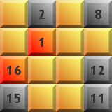
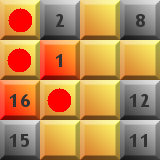
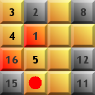
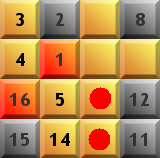
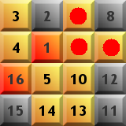
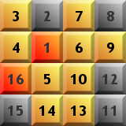

La meta del juego es llenar una cuadrícula con números, teniendo en cuenta que números consecutivos deben estar
conectados horizontal, vertical o diagonalmente.
Los Hidatos tienen una única solución, y se pueden resolver usando
sólo deducciones lógicas. No hay que adivinar casillas.
Vamos a ver paso a paso la resolución de un Hidato sencillo.
La siguiente imagen muestra el estado inicial de un tablero de Hidato. Las casillas inicial y final están marcadas en rojo, las casillas prefijadas en gris, y las casillas que hay que rellenar en amarillo.

Fijémonos en la tres casillas marcadas en la imagen siguiente:

La de la esquina superior izquierda necesita tener dos números adyacentes. El 1 no le sirve, pues el 2 ya está colocado. Entonces sólo le quedan dos casillas adyacentes, una contiene el 2, y la otra está vacía. Por lo tanto, la única opción para que tenga dos números adyacentes es que la casilla contenga un 3, y su adyacente vacía un 4. La última casilla tendrá que contener un 5, pues es la única manera de que el 4 tenga sus dos adyacentes.

Siguiendo la misma regla, ahora vemos que la casilla marcada sólo puede contener el 14.

Vemos ahora que hay dos posibles casillas que pueden contener el 13, las dos únicas casillas adyacentes al 14. Pero hay que darse cuenta que si lo pusiéramos en la superior, la inferior quedaría encerrada, pues no podríamos rellenarla con ningún número que tuviera dos adyacentes. Por lo tanto, abajo hay que poner el 13 y arriba el 10.

El Hidato ya está casi resuelto. La única casilla adyacente libre del 5 tiene que contener el 6, la única del 10 tiene que contener el 9, y la restante el 7.

Ya está resuelto. Si lo intentáis, veréis que es más fácil hacerlo que explicarlo. ¡Ánimo y suerte!